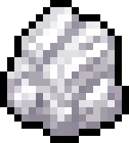

Network markers are the framed diamond every place uses, with a draining ring for time left: full when new, emptying clockwise. In the last day the ring turns ember and gains an hourglass badge. Labels only at high zoom; the Network chip dims everything else, for planning. All mockups
Street zoom (17), filter off
Labels show. Each network marker carries one number: stock for a building, progress for an order. The cart moves along the streets on the map's slow clock.
Tier II 412
🏠 Network
🌿🪵
👺
🏠
Hall
🌾
18Farm1
🍺
40%Rusty Tankard

6Quarry
⚒️
70%⏳Smithy · 14 h2
⚗️
👣Not visited3
🪧
Site ★★☆4
🐴
🌾 125
🧙
Zoomed out (15), Network on
The whole network around the hall. No labels; smaller markers; rings and badges stay. Everything not in the network is dimmed, so the route and its stops stand out.
Tier II 412
🏠 Network ✓6
🌿🪵
👺
🏛️
📜
🏠
🌾
18
🍺
40%
6
⚒️
⏳
⚗️
👣
🪧
🪧
⏳
🐴
1 km from the hall7
Legend
Every state has a shape or a word as well as its colour; each marker also has a spoken label, e.g. "Farm, 18 in stock, leaves in 3 days".
🌾
Full ring: new, six days left.
🌾
Draining ring: the dark part is time gone, clockwise from the top. Updates on the map's slow clock.
⚒️
⏳
Last day: ember ring and hourglass badge.
🪧
Site: dashed frame, empty sign. Stars in its label once discovered.
⚗️
👣
Not visited: footprints badge. Walk there to see its order.
🍺
40%
One number: stock on a building, progress on an order. "✓" when an order is filled; "FULL" when stock stops.
🏠
Hall: ember diamond, no ring: it doesn't expire.
What it must answer at a glance
1How is each piece doing? One number per marker: stock, or order %.
2What's leaving today? Ember ring + ⏳ badge, and the time in its label at street zoom.
3Where haven't I been? 👣 badge and "Not visited".
4Where can I build? Dashed site markers, stars in the label once discovered.
5Where's the cart and what's it carrying? The cart marker on the route, its load by icon.
6What's part of my network? The Network chip dims everything else.
7Where may I build? With the chip on, a dashed circle shows the building reach around the hall (1 km at tier 2).
Decisions to confirm
Rings on every temporary marker while the switch is on (places, taverns, sites, buildings), as the prompt asks. Fight events keep their own ring (difficulty); their 24 h isn't drawn.
The ring is drawn with the existing ring code (DifficultyRing), as a second, outer arc. Places that already have a difficulty ring get the time arc outside it.
Zoom thresholds and culling stay the map's own: labels from zoom 16.5, as places today.
The Network chip sits under the top bar, off by default, remembered per session. The route planner turns it on while open.
The reach circle only shows with the chip on, to keep the map calm.
A small unload animation (goods icons popping off the cart) plays at a stop if the app is open, at the Full animation level only.